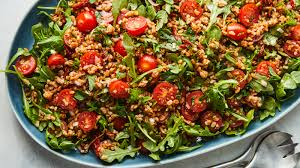

Home
Salad Recipe

Description
Ingredients
- 4 cups mixed greens (lettuce, spinach, arugula)
- 1 cup cherry tomatoes, halved
- 1 cucumber, sliced
- 1 bell pepper, diced
- 1/2 red onion, thinly sliced
- 1/4 cup feta cheese, crumbled (optional)
- 1/4 cup olives (black or green)
- 2 tablespoons olive oil
- 1 tablespoon balsamic vinegar or lemon juice
- Salt and pepper to taste
Instructions
- In a large bowl, combine the mixed greens, cherry tomatoes, cucumber, bell pepper, and red onion.
- Add olives and feta cheese if desired.
- In a small bowl, whisk together olive oil, balsamic vinegar (or lemon juice), salt, and pepper.
- Drizzle the dressing over the salad and toss gently to combine.
- Serve immediately and enjoy your fresh salad!